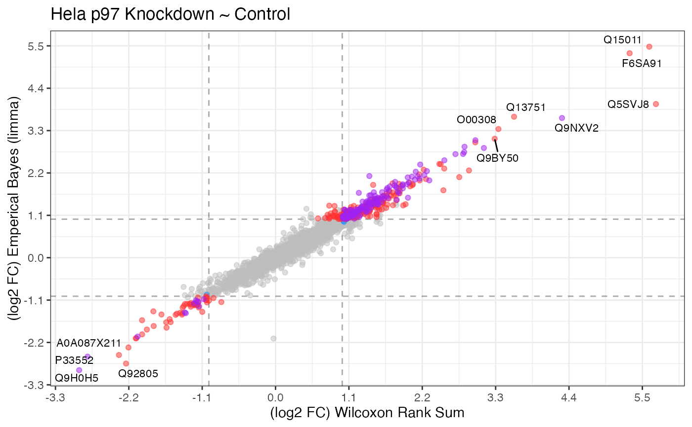

Comparative analysis between two expression tests
plot_compexp.Rdplot_compexp() is a GGplot2 implementation for plotting the comparison in
expression differences between two methods or two sets of groups. For example,
one could run an expression difference for two different conditions (A and B)
prodived the experiment contained 3 samples condition A, condition B and WT,
then compare those results. The proteins showing up in the intersection (purple)
indicate common targets for condition A and B.
Usage
plot_compexp(
table_a = NULL,
table_b = NULL,
log2fc_min = 2,
log2fc_column = "log2_foldchange",
significance_max = 0.05,
significance_column = "adj_p_value",
labels_column = "protein",
point_size = NULL,
show_lines = TRUE,
color_a = "dodgerblue",
color_b = "firebrick1",
color_u = "purple"
)Arguments
- table_a
a tibble
- table_b
a tibble
- log2fc_min
a numeric defining the minimum log2 foldchange to highlight.
- log2fc_column
a character defining the column name of the log2 foldchange values.
- significance_max
a numeric defining the maximum statistical significance to highlight.
- significance_column
a character defining the column name of the statistical significance values.
- labels_column
a character defining the column name of the column for labeling.
- point_size
a numeric for changing the point size.
- show_lines
a boolean for showing threshold lines.
- color_a
a character defining the color for table_a expression.
- color_b
a character defining the color for table_b expression.
- color_u
a character defining the color for the union between both tables.
Examples
library(ggplot2, warn.conflicts = FALSE)
library(dplyr, warn.conflicts = FALSE)
library(tidyproteomics)
# comparing two analytical methods, in substitute for two conditions
exp_a <- hela_proteins %>%
expression(knockdown/control) %>%
export_analysis(knockdown/control, .analysis = "expression")
#> ℹ .. expression::t_test testing knockdown / control
#> ✔ .. expression::t_test testing knockdown / control [3.3s]
#>
exp_b <- hela_proteins %>%
expression(knockdown/control, .method = "limma") %>%
export_analysis(knockdown/control, .analysis = "expression")
#> ℹ .. expression::limma testing knockdown / control
#> ! expression::limma removed 159 proteins with completely missing values
#> ℹ .. expression::limma testing knockdown / control
#> ✔ .. expression::limma testing knockdown / control [463ms]
#>
plot_compexp(exp_a, exp_b, log2fc_min = 1, significance_column = "p_value") +
ggplot2::labs(x = "(log2 FC) Wilcoxon Rank Sum",
y = "(log2 FC) Emperical Bayes (limma)",
title = "Hela p97 Knockdown ~ Control")
#> Warning: ggrepel: 353 unlabeled data points (too many overlaps). Consider increasing max.overlaps
